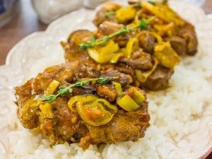

Баранина с белыми грибами и помидорами
Роскошное блюдо! Сочная баранина, ароматные грибы, нежный лук порей. Это очень вкусно! На гарнир можно приготовить рис или картофель. Вместо баранины можно использовать говядину, вместо белых грибов любые другие, но вкус получится совершенно иной. Из указанного количества ингредиентов получается 4 порции.
Ингридиенты:

500 г баранины
300 г белых грибов
300 г помидоров
лук порей (или 150 г репчатого лука)
5–7 веточек тимьяна (по желанию)
соль
перец
растительное масло
Приготовление
Лук порей нарезать кольцами (репчатый полукольцами).
На небольшом количестве масла обжарить баранину с двух сторон .
Добавить грибы, посолить, поперчить.
Накрыть крышкой, тушить в течение 35–40 минут.
С помидоров снять кожицу.
Пропустить через мясорубку (или измельчить в блендере).
Тимьян освободить от веточек, добавить к помидорам.
Немного посолить, поперчить.
К баранине добавить помидоры.
Добавить лук, накрыть крышкой.
Тушить в течение 10–15 минут.